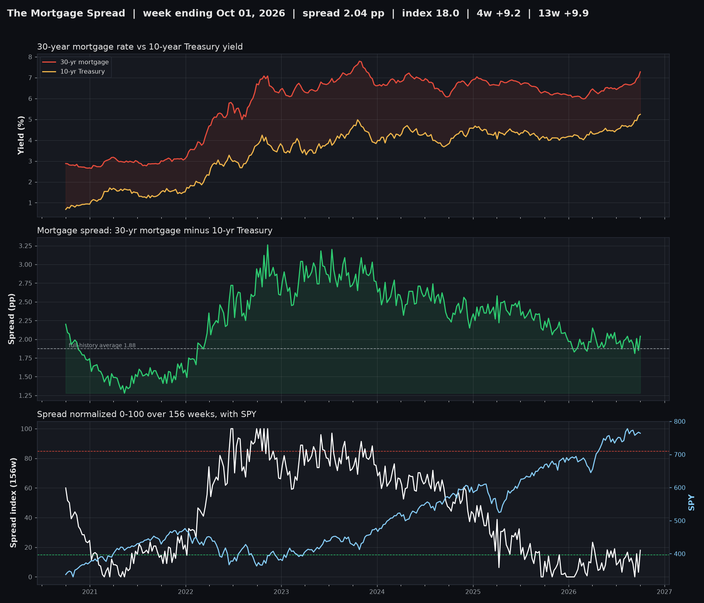

The Mortgage Spread
What housing pays above the government. Week ending October 01, 2026.

| 30-year mortgage rate | 7.28% |
| 10-year Treasury yield | 5.24% |
| Spread | 2.04 pp |
| Spread index (156-week) | 18.0 |
| 4-week move | +9.2 |
| 13-week move | +9.9 |
The spread is in the middle of its three-year range.